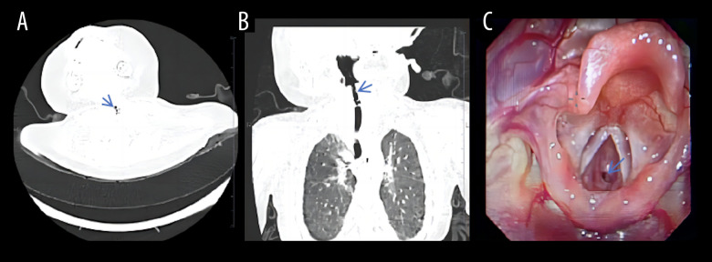
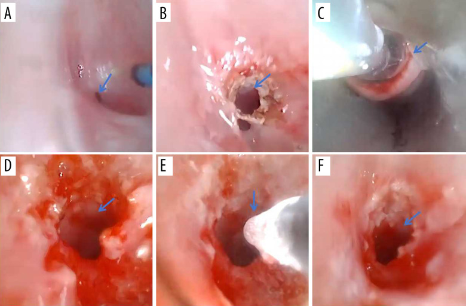
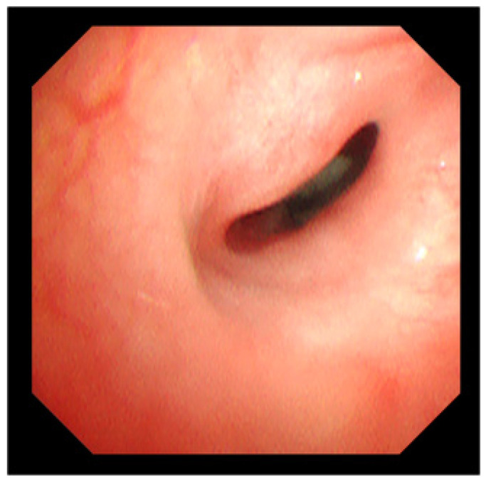

3047 — Hẹp khí quản mắc phải sau đặt nội khí quản ở trẻ: phân độ Myer–Cotton, CT–nội soi, nong bóng/laser & khi nào cắt nối
Tags: pattern:rit-hai-thi pattern:hep-duong-tho pattern:hep-duoi-thanh-mon vung:duong-tho vung:thanh-quan vung:khi-quan anatomy:thanh-quan score:Myer-Cotton protocol:CT-lat-mong protocol:noi-soi-ong-mem protocol:nong-bong
Mức chắc chắn (certainty): tổng hợp y văn (literature synthesis) — ghép loạt 172 trẻ hẹp thanh quản sẹo sau đặt nội khí quản (J Clin Med 2026, PMC13163590), 29 nhũ nhi ≤ 1 tuổi (Afr J Thorac Crit Care Med 2026, PMC13277382), tổng quan 2026 về nong bóng nội soi (J Clin Med 2026, PMC13116667), ca 2 tháng tuổi độ III (Am J Case Rep 2025, PMC12758065), meta-analysis độ chính xác CT/CTVB (Eur Arch Otorhinolaryngol 2026, PMC13002695) và ca hẹp khí quản “im lặng” 15 tuổi (Cureus 2026, PMC13419857). Không có ca do nhóm tự chụp.
Câu hỏi thực hành: bé gái 2 tháng tuổi, tiền sử đặt nội khí quản 10 ngày vì viêm phổi do ho gà, nay rít hai thì + co lõm ngực, điều trị “viêm phế quản” 2 tuần không đỡ. Câu hỏi: đây là di chứng hẹp đường thở hay còn phù sau rút ống, chụp gì, phân độ nào, và nong bóng được không? Bài chốt ba quyết định: (1) rít hai thì kéo dài > 1 tuần sau rút ống = nội soi đường thở, không chờ “croup”; (2) phân độ Myer–Cotton bằng nội soi + đo CT lát mỏng; (3) hẹp mềm/sớm < 30 ngày → nong bóng ± rạch nan hoa; hẹp sẹo xơ/có sụn độ III–IV → cân nhắc tạo hình thanh–khí quản hoặc cắt nối. Nối 3005 – U máu dưới thanh môn, 612 – Cấp cứu đường thở trên ở trẻ, 602 – Khí phế quản mềm, 694 – Mềm sụn thanh quản.
1. Tổng quan bệnh học – cơ chế hình ảnh: vì sao 1 mm sẹo đã làm trẻ ngạt
- Định nghĩa và vị trí: hẹp đường thở mắc phải sau đặt nội khí quản (post-intubation airway stenosis) hay gặp nhất ở dưới thanh môn – vòng sụn nhẫn vì đây là đoạn hẹp nhất và là vòng sụn kín của đường thở trẻ. Trong 172 trẻ hẹp thanh quản sẹo sau đặt nội khí quản, 85,3% (146/171) ở dưới thanh môn, 11,1% thể phối hợp, chỉ 2,9% ở thanh môn và 0,7% trên thanh môn (PMC13163590). Hẹp khí quản thật (dưới sụn nhẫn) thường gặp sau mở khí quản hoặc sau bóng chèn (cuff) đặt quá lâu, và là thực thể cần phân biệt với hẹp dưới thanh môn.
- TẠI SAO áp lực ống lại gây sẹo: bóng chèn/ống tạo áp lực lên niêm mạc vượt áp lực tưới máu mao mạch (~25–30 mmHg) → thiếu máu niêm mạc → loét → viêm sụn → mô hạt → xơ hóa co kéo. Sẹo xơ không co giãn theo nhịp thở, nên hẹp cố định và gây rít cả thì hít vào và thở ra. Theo định luật Poiseuille, sức cản tỉ lệ nghịch với bán kính mũi 4 (R ∝ 1/r⁴): ở nhũ nhi, đường kính dưới thanh môn bình thường chỉ 4–5 mm; giảm còn 2 mm làm sức cản tăng ~16 lần — vì vậy một vòng sẹo 1–2 mm đã đủ gây suy hô hấp.
- Tần suất – con số thực tế: khoảng 90% hẹp thanh–khí quản ở trẻ là mắc phải, 10% bẩm sinh (PMC13116667). Tần suất hẹp dưới thanh môn mắc phải ở trẻ đã giảm còn ~1–2% ở nhũ nhi đặt nội khí quản kéo dài; một nghiên cứu Australia ghi nhận 0,93% ở 50 nhũ nhi/trẻ; các loạt cũ hơn nêu ~3% trẻ từng đặt nội khí quản (PMC13163590, PMC13277382). Không phải “bệnh hiếm gặp trong ICU”.
- Yếu tố nguy cơ – định lượng:
- Ống quá cỡ gặp ở 52% (15/29) nhũ nhi bị hẹp trong loạt Nam Phi (PMC13277382); đây là yếu tố có thể phòng rõ nhất.
- Đặt ống nhiều lần: > 5 lần thử làm tăng nguy cơ hẹp gấp 5 lần (PMC13277382 dẫn lại); trong loạt 172 trẻ, 82,6% được đặt ống cấp cứu và 31,6% có đặt lại ống.
- Thời gian đặt ống: mỗi 5 ngày đặt ống thêm làm tăng nguy cơ 50,3% (PMC13277382 dẫn lại); loạt 29 nhũ nhi có thời gian đặt ống trung bình 9,9 ± 7,0 ngày.
- Tuổi nhỏ: 70,8% trẻ trong loạt 172 được đặt ống lần đầu trong năm đầu đời, tuổi trung vị 6,2 tháng; tuổi đặt ống lần đầu và kiểu đặt ống (cấp cứu/chương trình) là hai biến duy nhất liên quan đến độ nặng (p = 0,02 và p = 0,04).
- Trào ngược dạ dày–thực quản, nhiễm trùng đường thở, đặt lại ống, rút ống không dự kiến đều làm nặng thêm; rút ống không dự kiến gặp ở 31% loạt Nam Phi.
- Diễn tiến thời gian – mấu chốt để chọn can thiệp: hẹp sớm < 30 ngày sau rút ống** thường còn **mềm, màng mỏng**, đáp ứng nong bóng tới **100%**; hẹp **mạn > 30 ngày đã thành sẹo xơ trưởng thành, tỷ lệ thành công chỉ còn ~39% (PMC13116667). Vì vậy câu hỏi “hẹp bao lâu rồi?” quan trọng không kém “hẹp bao nhiêu %”.
- TẠI SAO CT hữu ích nhưng không thay nội soi: CT đo được đường kính, diện tích lòng, chiều dài đoạn hẹp, khoảng cách tới dây thanh và mức xâm lấn sụn — những thứ quyết định chọn nong bóng hay cắt nối. Meta-analysis 14 nghiên cứu (người ≥ 12 tuổi) cho CT gộp Se 91,5% / Sp 90,8%, CTVB đo đường kính Se 92% / Sp 88%, còn MRI độ đặc hiệu rất thấp 6–46% nên không dùng đơn độc (PMC13002695). Tuy nhiên nội soi ống mềm/ống cứng vẫn là tiêu chuẩn vàng vì thấy được niêm mạc, mô hạt, sụn hở, và đánh giá động.
- Ngưỡng định nghĩa hẹp: ở trẻ đủ tháng, đường kính dưới thanh môn ≤ 4 mm là hẹp; ở trẻ sinh non, ≤ 3 mm là bất thường (PMC13116667, PMC13277382). Đây là ngưỡng tuyệt đối, cần đối chiếu với đường kính ống nội khí quản phù hợp tuổi và diện tích lòng trên CT.
- Phân bố độ nặng: trong 172 trẻ, độ 1: 39,5%, độ 2: 23,3%, độ 3: 26,2%, độ 4: 11% → 37,2% có hẹp độ 3–4 (nặng); 62,8% đã từng mở khí quản (PMC13163590). Con số này giải thích vì sao bài toán không chỉ là “nong bóng cho tất cả”.
2. Mẫu hình + chẩn đoán phân biệt theo vị trí và pha tiếng rít (Gamut)
- Định khu bằng pha tiếng rít:
- Thì hít vào: tắc nghẽn ngoài lồng ngực — mềm sụn thanh quản, liệt dây thanh, hẹp thanh môn, nang thung lũng.
- Thì thở ra: tắc nghẽn trong lồng ngực — khí phế quản mềm, chèn ép mạch máu, hẹp khí quản thấp.
- Hai thì: tổn thương cố định — hẹp dưới thanh môn do sẹo, hẹp khí quản, vòng mạch, u trong lòng.
- Gamut theo vị trí:
- Thanh môn: dính dây thanh sau chấn thương/đặt ống, u nhú, liệt dây thanh.
- Dưới thanh môn: hẹp sẹo mắc phải (hay gặp nhất), hẹp bẩm sinh, u máu dưới thanh môn, nang dưới thanh môn, hẹp do bỏng/hít.
- Khí quản: hẹp sau mở khí quản (trên lỗ mở), hẹp do bóng chèn, u nhú lan, u máu, dị vật, khí phế quản mềm.
- Gamut theo bối cảnh:
- Sau đặt nội khí quản kéo dài: hẹp sẹo dưới thanh môn/khí quản — nghĩ ngay khi rít hai thì xuất hiện 1–6 tuần sau rút ống.
- Sau mở khí quản: hẹp trên lỗ mở hoặc tại lỗ mở, thường kèm u hạt.
- Trẻ nhỏ có u máu da vùng râu: u máu dưới thanh môn (bài 3005).
- Trẻ khỏe, rít thì hít vào, giảm khi nằm nghiêng: mềm sụn thanh quản (bài 694).
- Rít thì thở ra, xẹp > 50% khi thở ra: khí phế quản mềm (bài 602).
- Mnemonic “STENOSIS”: Scar sau đặt ống, Tracheostomy (hẹp trên lỗ mở), Endotracheal tube quá cỡ/kéo dài, Neoplasm (u nhú, u máu), Obstruction (dị vật), Subglottic congenital, Infection (croup, viêm màng bạch hầu), Synechia (dính dây thanh).
3. Bảng so sánh phân biệt (ma trận đối chiếu)
| Thực thể (entity) | Hình ảnh điển hình | Chốt vào (rule-in) | Chốt loại (rule-out) | Gợi ý xác nhận |
|---|---|---|---|---|
| Hẹp dưới thanh môn mắc phải (acquired SGS) | Hẹp chu vi hoặc một bên ngay dưới dây thanh, sẹo xơ, có thể mức độ 1–4; CT thấy giảm diện tích lòng, sụn nhẫn dày/không đều | Tiền sử đặt nội khí quản + rít hai thì 1–6 tuần sau rút ống + hẹp tại vòng nhẫn | Niêm mạc bình thường, không tiền sử đặt ống, hẹp do co thắt thoáng qua | Nội soi ống mềm + CT lát mỏng; phân độ Myer–Cotton |
| Hẹp dưới thanh môn bẩm sinh | Vòng sụn nhẫn hẹp đối xứng, không sẹo, có thể hình elip; triệu chứng từ sơ sinh | Triệu chứng ngay sau sinh, không tiền sử đặt ống, không mô hạt | Có sẹo, có tiền sử ống, hẹp tiến triển theo tuần → mắc phải | Nội soi + CT; đo đường kính, đối chiếu tuổi |
| Mềm sụn thanh quản (laryngomalacia) | Nắp thanh môn hình omega, mô phễu sa vào lòng thì hít vào, mở thì thở ra; không khối cố định | Rít THÌ HÍT VÀO, giảm khi nằm nghiêng, khởi phát ≤ 2 tuần tuổi | Rít hai thì + khối/hẹp cố định + không thay đổi theo tư thế | Nội soi động khi trẻ tự thở |
| U máu dưới thanh môn (SGH) | Khối nhẵn, dưới niêm mạc, ngấm mạnh 118–300 HU; nội soi màu hồng/tím, mềm, dễ chảy máu | Trẻ < 6 tháng + rít hai thì + khối ngấm mạnh + u máu da (24%) | Khối không ngấm, bờ xâm lấn, sụn phá hủy → u khác | Nội soi + CECT; không sinh thiết; propranolol |
| Hẹp khí quản sau mở khí quản / bóng chèn | Hẹp khu trú tại hoặc trên lỗ mở khí quản, đoạn hẹp ngắn, có thể thấy sụn gãy/xơ | Tiền sử mở khí quản + hẹp đúng vị trí lỗ mở + khoảng cách tới dây thanh xa | Hẹp lan tỏa, không liên quan lỗ mở → nghĩ bẩm sinh/viêm | Nội soi + CT; đo chiều dài đoạn hẹp |
| Khí phế quản mềm (TBM) | Khí quản xẹp > 50% diện tích lòng thì THỞ RA, trở về bình thường thì hít vào; CT động/expiratory | Xẹp động thì thở ra, không hẹp cố định | Hẹp cố định cả hai thì, không đổi theo nhịp thở → sẹo | Nội soi/CT động; nghiệm pháp thở ra |
| Vòng mạch chèn ép (vascular ring) | Khí quản bị đẩy/chèn một bên bởi mạch, hẹp lan, không khối trong lòng; CTA/MRA thấy vòng mạch | Rít hai thì + bú khó + không đáp ứng nong bóng + thấy mạch vòng | Không có mạch vòng, có khối/hẹp trong lòng → nội tại | CTA/MRA + siêu âm tim; nội soi đánh giá động |
| Dị vật / u nhú thanh quản | Dị vật cản quang hoặc khối trong lòng; u nhú nhiều nốt sùi, không ngấm mạnh | Khởi phát đột ngột sau hóc + một bên; u nhú ở trẻ lớn/khàn kéo dài | Hẹp chu vi đều, tiền sử đặt ống, không khối → sẹo | Nội soi ± sinh thiết (u nhú), CT nếu dị vật cản quang |

Bé gái 2 tháng tuổi, viêm phổi do ho gà, đặt nội khí quản 10 ngày. (A) CT ngang, (B) CT vành: hẹp khu trú dưới thanh môn (mũi tên xanh); (C) nội soi ống mềm: lòng chỉ còn như đầu đinh ghim, niêm mạc dày xơ — hẹp độ III Myer–Cotton. Nguồn: Am J Case Rep 2025 (PMC12758065), CC BY-NC-ND 4.0, nguyên bản.
Cùng bệnh nhân: (A) trước can thiệp; (B–E) laser holmium 0,5–1,0 J/xung, nong bóng 6 mm ở 14 atm, áp lạnh −70°C; (F) sau lần can thiệp đầu, lòng đã mở rộng rõ. Đây là bằng chứng “nong bóng đơn thuần chưa đủ với sẹo xơ dày — cần rạch/laser trước”. Nguồn: Am J Case Rep 2025 (PMC12758065), CC BY-NC-ND 4.0, nguyên bản.4. Protocol chẩn đoán – phân độ – điều trị
- Bước 0 — bảo vệ đường thở trước mọi thứ: nếu co lõm nặng, tím, SpO₂ giảm, kiệt sức → đặt ống nhỏ hơn 0,5–1 mm so với tuổi, chuẩn bị nội soi cứng/mở khí quản; không đặt ống mù nhiều lần vì làm tăng nguy cơ hẹp thêm. Trong loạt 172 trẻ, 62,8% đã phải mở khí quản — phần lớn vì chẩn đoán muộn.
- Bước 1 — nội soi ống mềm (linh hoạt) khi trẻ còn tự thở: xác định vị trí, chu vi, mức hẹp, mô hạt/sẹo, sụn hở, động học. Đây là tiêu chuẩn vàng và là nơi phân độ Myer–Cotton:
- Độ I: hẹp ≤ 50% lòng.
- Độ II: 51–70%.
- Độ III: 71–99%.
- Độ IV: không còn lòng (hoàn toàn tắc).
- Bước 2 — CT cổ–ngực lát mỏng (0,625–1 mm), dựng vành/đứng: đo đường kính nhỏ nhất, diện tích lòng, chiều dài đoạn hẹp, khoảng cách tới dây thanh, đánh giá sụn nhẫn/khí quản và loại trừ vòng mạch. Không cản quang nếu chỉ hẹp sẹo; có cản quang khi nghi u máu/vòng mạch. CTVB hỗ trợ mô phỏng lòng nhưng không thay nội soi (Se 92%/Sp 88%).
- Bước 3 — chọn can thiệp theo độ + độ “chín” của sẹo:
| Tình huống | Lựa chọn đầu tay | Số liệu / lưu ý |
|---|---|---|
| Độ I, không triệu chứng | Theo dõi + điều trị trào ngược; nội soi lại khi có triệu chứng | Không can thiệp chỉ vì “thấy hẹp” |
| Độ I–II, hẹp mềm/sớm < 30 ngày | Nong bóng ± rạch nan hoa | Thành công tới 100% ở hẹp sớm; gộp 65–86%, meta 65,3%, loạt mắc phải 82,3–86% |
| Độ II–III, sẹo xơ dày | Rạch nan hoa bằng laser/dao lạnh + nong bóng, có thể nhắc lại | Cần 1,6–3 lần nong/trẻ; tái hẹp 51,6–59,2% trong một số loạt |
| Độ III–IV, sụn biến dạng/hẹp dài | Tạo hình thanh–khí quản (LTR) hoặc cắt nối sụn nhẫn–khí quản (PCTR) | PCTR cho giải mở ống 90–96%; LTR một thì giữ ống 7–10 ngày, hai thì đặt stent ≥ 6 tuần |
| Độ IV/đe dọa tính mạng | Mở khí quản tạm + can thiệp thì sau | Không nong bóng mù khi không kiểm soát được đường thở |
- Kỹ thuật nong bóng (theo tổng quan 2026):
- Chọn bóng lớn hơn đường kính ngoài ống nội khí quản phù hợp tuổi ~2 mm, tối thiểu 6 mm; ví dụ trẻ 4 tuổi dùng ống 5,0 mm (đường kính ngoài ~7 mm) → bóng 7–8 mm.
- Ca minh họa dùng bóng 6 mm, 14 atm; tổng quan nêu bóng 10 mm, 10 atm × 30 giây × 3 lần + 60 giây × 1 lần.
- Rạch nan hoa trước nếu sẹo dày (laser/dao lạnh) để phá vòng xơ; áp lạnh −70°C sau nong nhằm giảm mô hạt (ca minh họa).
- Sau nong: dexamethasone, kháng sinh, giảm trào ngược; có thể giữ ống nhỏ hơn phủ betamethasone 0,5 mg + gentamicin 1 mg trong ~48 giờ làm nẹp tạm — giúp tránh mở khí quản ~85% (50/59) trong một loạt.
- Theo dõi: nội soi lại 2–4 tuần, sau đó 3–6 tháng; đánh giá rít, co lõm, tăng cân, giọng nói, nuốt. Không dùng CT lặp lại thường quy nếu lâm sàng ổn — ưu tiên nội soi để giảm liều xạ (ALARA).
flowchart TD
A[Trẻ rít hai thì sau rút ống > 1 tuần] --> B{Co lõm nặng, tím, SpO2 giảm?}
B -->|Có| C[Bảo vệ đường thở: ống nhỏ hơn 0,5-1 mm + chuẩn bị nội soi cứng/mở khí quản]
B -->|Không| D[Nội soi ống mềm thì tự thở: vị trí, mức hẹp, sẹo, sụn]
C --> D
D --> E[Phân độ Myer-Cotton + CT lát mỏng 0,625-1 mm]
E --> F{Độ I và không triệu chứng?}
F -->|Có| G[Theo dõi + điều trị trào ngược]
F -->|Không| H{Hẹp mềm, sớm < 30 ngày?}
H -->|Có| I[Nong bóng ± rạch nan hoa; lặp lại 1,6-3 lần nếu cần]
H -->|Không| J{Sẹo xơ dày hoặc sụn biến dạng?}
J -->|Không| I
J -->|Có| K[LTR hoặc PCTR; mở khí quản tạm nếu đe dọa]
I --> L[Nội soi lại 2-4 tuần; theo dõi tái hẹp]
K --> L
5. Biến thể bình thường và cạm bẫy
- Bẫy 1 — “croup tái phát” hoặc “hen”: hẹp sẹo không sốt, không đáp ứng kháng sinh/khí dung, nặng dần theo tuần. Trẻ < 1 tuổi rít sau đặt ống + thất bại điều trị “viêm phế quản” → nội soi. Trong loạt 172 trẻ, nhiều ca chỉ được chẩn đoán khi đã mở khí quản.
- Bẫy 2 — phù sau rút ống vs hẹp thật: phù do chấn thương ống thường xuất hiện trong 24–72 giờ và giảm sau vài ngày với dexamethasone; hẹp sẹo xuất hiện 1–6 tuần và không giảm. Đừng gọi “hẹp” khi mới rút ống 1 ngày.
- Bẫy 3 — chỉ đọc CT ngang: một lát ngang có thể bị đọc là dày niêm mạc đối xứng hoặc bỏ sót hẹp lệch bên; luôn dựng vành/đứng, đo tại điểm hẹp nhất, so với đường kính ống phù hợp tuổi.
- Bẫy 4 — CT bình thường không loại trừ hẹp động: khí phế quản mềm chỉ xẹp thì thở ra; CT thì hít vào có thể bình thường. Nếu nghi, làm CT động/expiratory hoặc nội soi động.
- Bẫy 5 — bỏ sót hẹp “im lặng”: trẻ có bệnh thần kinh, chậm phát triển, khó nuốt có thể không phàn nàn; hẹp chỉ lộ ra khi nhiễm trùng, co giật, gắng sức — ca 15 tuổi trong y văn vào viện vì trạng thái động kinh, đặt ống 3 lần thất bại mới phát hiện hẹp dưới thanh môn lỗ kim (PMC13419857). Luôn hỏi tiền sử đặt ống ở trẻ thở máy kéo dài dù hiện không rít.
- Bẫy 6 — nong bóng quá tay: bóng quá lớn/áp lực quá cao có thể gây rách niêm mạc, vỡ khí quản, tràn khí màng phổi/trung thất. Chọn bóng theo đường kính ngoài ống + 2 mm, không theo “cảm giác”.
- Bẫy 7 — nhầm hẹp bẩm sinh với mắc phải: hẹp bẩm sinh không có sẹo, không tiền sử ống, triệu chứng sớm; hẹp mắc phải có sẹo và tiền sử. Điều trị và tiên lượng khác nhau.
6. Tự lượng giá — Blind Quiz
Ca 1 — Bé gái 2 tháng tuổi, đặt nội khí quản 10 ngày vì ho gà, rít hai thì + co lõm ngực.
- Câu hỏi 1: Mô tả vị trí và mức hẹp trên CT (A, B) và nội soi (C). Phân độ Myer–Cotton?
- Câu hỏi 2: Vì sao không thể chỉ điều trị như “croup” và cho về?
Bấm để hiện đáp án (findings + chẩn đoán)
- Dấu hiệu (findings): (A, B) hẹp khu trú ngay dưới dây thanh tại vòng sụn nhẫn, lòng còn rất nhỏ; (C) nội soi thấy lỗ thông như đầu đinh ghim, niêm mạc dày, xơ — hẹp 71–99% = độ III.
- Chẩn đoán (diagnosis): hẹp dưới thanh môn mắc phải sau đặt nội khí quản, độ III Myer–Cotton.
- Vì sao không phải croup: croup sốt, khởi phát nhanh, đáp ứng dexamethasone/khí dung, không kéo dài nhiều tuần; đây là sẹo cố định sau 10 ngày ống.
- Nguồn ảnh: Am J Case Rep 2025 (PMC12758065), CC BY-NC-ND 4.0.
Ca 2 — Cùng bệnh nhân, can thiệp nội soi.
- Câu hỏi 3: Ảnh B–E thực hiện những bước gì? Vì sao phải rạch/laser trước khi nong bóng ở sẹo dày? Chọn bóng theo nguyên tắc nào?
Bấm để hiện đáp án
- Dấu hiệu (findings): (B) laser holmium 0,5–1,0 J/xung cắt mô xơ; (C–E) nong bóng 6 mm, 14 atm, sau đó áp lạnh −70°C; (F) lòng mở rộng ngay sau can thiệp.
- Chẩn đoán (diagnosis): hẹp dưới thanh môn độ III, điều trị đa mô thức nội soi; rút oxy dần ngày 5, nội soi 1 tháng không tái hẹp.
- Vì sao rạch trước: sẹo xơ dày có độ đàn hồi cao, nong đơn thuần dễ co lại ngay; rạch nan hoa phá vòng xơ giúp bóng mở đều.
- Chọn bóng: đường kính ngoài ống nội khí quản phù hợp tuổi + ~2 mm, tối thiểu 6 mm; tránh bóng quá lớn gây vỡ khí quản.
- Nguồn ảnh: Am J Case Rep 2025 (PMC12758065), CC BY-NC-ND 4.0.
Ca 3 — Hình nội soi phân độ (ôn lại):

- Câu hỏi: Hình này thuộc độ mấy? Nếu trẻ không có tiền sử đặt ống và triệu chứng từ sơ sinh, nghĩ gì?
Bấm để hiện đáp án
- Dấu hiệu: lòng dưới thanh môn còn khe hẹp, ước 71–99% → độ III.
- Nếu không tiền sử đặt ống + triệu chứng sớm: nghĩ hẹp dưới thanh môn bẩm sinh hoặc u máu/nang; cần nội soi + CT, không mặc định là sẹo mắc phải.
- Nguồn ảnh: J Clin Med 2026 (PMC13116667), CC BY 4.0.
Bài liên quan chéo
- 3005 – U máu dưới thanh môn ở nhũ nhi: rít HAI thì + propranolol
- 694 – Mềm sụn thanh quản ở nhũ nhi
- 612 – Cấp cứu đường thở trên ở trẻ em
- 602 – Khí phế quản mềm ở trẻ BPD
- 600 – Tổng quan Hệ Nhi khoa
Không dùng để chẩn đoán độc lập khi chưa có người hướng dẫn.